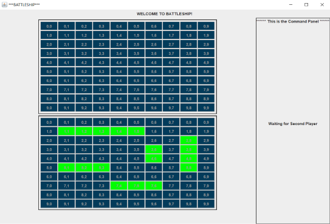
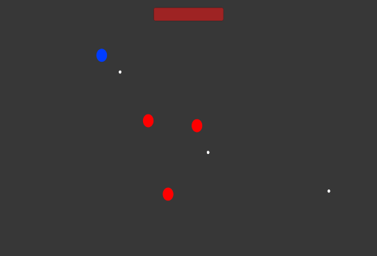
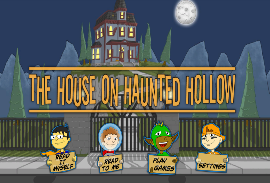

My Projects




Between college and personal projects, I have been working with Unity for 5 years.
I worked on with SQL Server as a databse for the web forms I created as a Web Developer.
Throughout my programming experience, I have gained more of a proficiency in C# and Java. I have also used C++, Python, Swift, JavaScript, HTML, and CSS.


